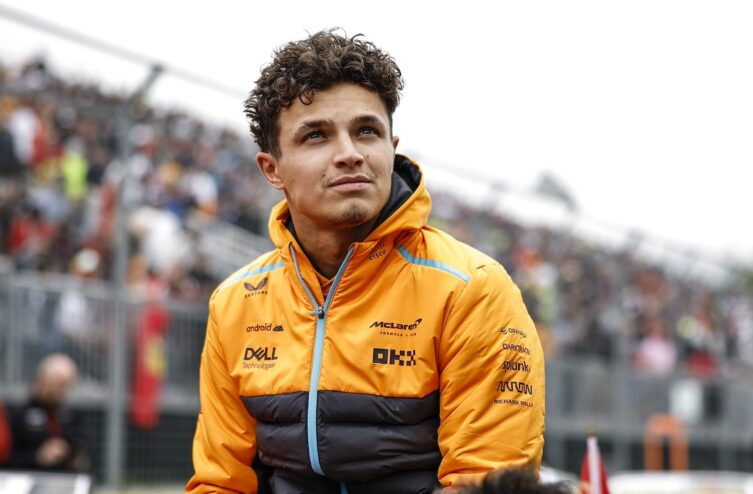

Terceiro Post

Lando Norris é um automobilista britânico que atualmente compete na Fórmula 1 pela equipe McLaren. Ele conquistou o título da Fórmula MSA em 2015, venceu a Toyota Racing Series, a Fórmula Renault 2.0 e a Fórmula Renault Norte-Europeia em 2016, e foi campeão do Campeonato Europeu de Fórmula 3 da FIA em 2017. Além disso, Norris é vice-campeão da Fórmula 2 em 20181. Nasceu em Bristol, Inglaterra, em 13 de novembro de 1999. Sua carreira na Fórmula 1 começou em 2019, e ele já acumula 116 GPs disputados, uma vitória, 20 pódios e 804 pontos. A primeira vitória de Norris na F1 ocorreu no Grande Prêmio de Miami em 202423.